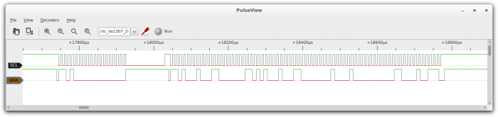

OpenTraceView¶
OpenTraceView is the graphical user interface for visualizing and analyzing captured signals in the OpenTraceLab ecosystem. 
Features¶
- Fast signal rendering - O(log N) performance at all zoom levels
- Protocol decoder support - 100+ built-in protocol decoders
- Trace groups - Organize related signals together
- Stacked decoders - Chain decoders for complex analysis
- Export capabilities - Save data in multiple formats
- Cross-platform - Linux, Windows, macOS support
Key Capabilities¶
Signal Visualization¶
- Multi-channel digital signal display
- Analog signal support (oscilloscope mode)
- Customizable colors and layouts
- Zoom and pan with smooth navigation
Protocol Analysis¶
- Automatic protocol detection
- Real-time decoding during capture
- Hierarchical decoder stacking
- Export decoded data to CSV/JSON
Hardware Integration¶
- Direct connection to logic analyzers
- Live capture and analysis
- Trigger configuration
- Sample rate optimization
Getting Started¶
- Install OpenTraceView
- Connect your logic analyzer - USB connection
- Configure channels - Set up signal names and types
- Start capturing - Click "Run" to begin acquisition
- Add decoders - Select protocols from the Decoders menu
Supported Protocols¶
OpenTraceView includes decoders for: - Serial: UART, SPI, I²C, RS232/485 - Automotive: CAN, LIN, FlexRay, K-Line - Embedded: ARM ITM/ETM, JTAG, SWD - Audio: I²S, PCM, AC97 - Wireless: NRF24L01, CC1101, Bluetooth - And 100+ more protocols
Advanced Features¶
Custom Decoders¶
Write your own protocol decoders in Python:
import OpenTraceDecode as srd
class Decoder(srd.Decoder):
api_version = 3
id = 'my_protocol'
name = 'My Protocol'
# ... decoder implementation
Automation¶
Integrate with scripts and automation:
# Export decoded data
opentraceview --input capture.sr --export csv --output data.csv
# Batch processing
for file in *.sr; do
opentraceview --input "$file" --decode i2c --export json
done
Manual and Documentation¶
- User Manual - Complete usage guide
- Video Tutorial - Logic analyzer basics
- Architecture Overview - Technical details
Building from Source¶
Prerequisites¶
Required dependencies:
# Ubuntu/Debian
sudo apt install build-essential meson ninja-build pkg-config \
libglib2.0-dev libglibmm-2.4-dev qt6-base-dev qt6-svg-dev \
libboost-serialization-dev libboost-system-dev
# Fedora/RHEL
sudo dnf install gcc-c++ meson ninja-build pkgconfig \
glib2-devel glibmm24-devel qt6-qtbase-devel qt6-qtsvg-devel \
boost-devel
# macOS (with Homebrew)
brew install meson ninja pkg-config glib glibmm qt6 boost
OpenTrace dependencies:
# Install OpenTraceCapture first
git clone https://github.com/OpenTraceLab/OpenTraceCapture.git
cd OpenTraceCapture && meson setup build && meson compile -C build && sudo meson install -C build
# Install OpenTraceDecode (optional, for protocol decoding)
git clone https://github.com/OpenTraceLab/OpenTraceDecode.git
cd OpenTraceDecode && meson setup build && meson compile -C build && sudo meson install -C build
Build Steps¶
# Clone repository
git clone https://github.com/OpenTraceLab/OpenTraceView.git
cd OpenTraceView
# Configure build
meson setup builddir --buildtype=release
# Compile
meson compile -C builddir
# Install
sudo meson install -C builddir
Build Options¶
# Disable protocol decoding support
meson setup builddir -Ddecode=false
# Disable data flow support
meson setup builddir -Dflow=false
# Enable debug stacktraces
meson setup builddir -Dstacktrace=true
# Development build
meson setup builddir --buildtype=debug
Contributing¶
- Translations - Help translate the interface
- Protocol decoders - Add support for new protocols
- Bug reports - Report issues on GitHub
- Feature requests - Suggest improvements See our contributing guide for details.